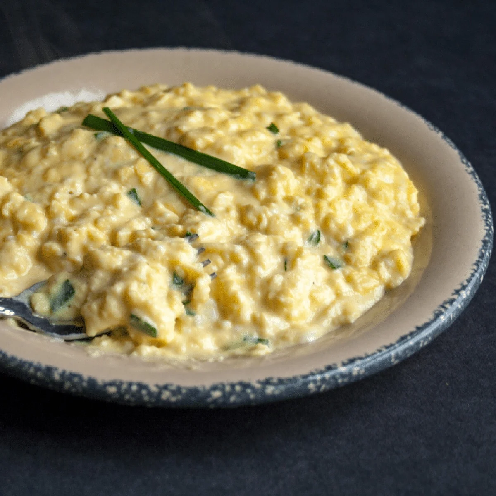

Eggs

This is a recipe that Chris eats on a daily basis. This method of cooking eggs is called soft scrambled. To him, there is
no food greater than eggs. It has almost every nutrient, and it tastes amazing; especially when you cook it this way. Here's how:
Ingredients
- Eggs
- Butter
- Green Onion
- Salt & Pepper
Steps
- Melt a quarter stick of butter in pan on
medium heat.
- Crack 3 eggs, and begin stirring
- Do not stop stirring.
- As eggs begin to solidify, take off stove
periodically. Think on and off in intervals of 10
seconds.
- When they get to consistency shown in picture
above, add your salt, pepper, and sliced green onion.
- Enjoy!
The key is putting salt and pepper after
you have already cooked the eggs. This prevents the
egg from turning too dry.